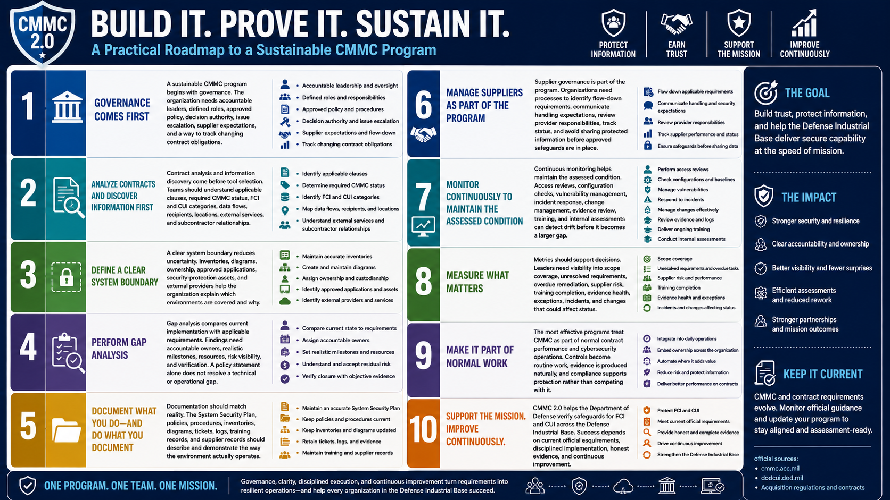

What Is CMMC 2.0?
Building a CMMC Program
Connecting to LMS... Progress: in progress
Version 1.0 | Date: 2026-06-16 | Educational overview of CMMC 2.0 concepts.

Narration
A sustainable CMMC program begins with governance. The organization needs accountable leaders, defined roles, approved policy, decision authority, issue escalation, supplier expectations, and a way to track changing contract obligations.
Contract analysis and information discovery come before tool selection. Teams should understand applicable clauses, required CMMC status, FCI and CUI categories, data flows, recipients, locations, external services, and subcontractor relationships.
A clear system boundary reduces uncertainty. Inventories, diagrams, ownership, approved applications, security-protection assets, and external providers help the organization explain which environments are covered and why.
Gap analysis compares current implementation with applicable requirements. Findings need accountable owners, realistic milestones, resources, risk visibility, and verification. A policy statement alone does not resolve a technical or operational gap.
Documentation should match reality. The System Security Plan, policies, procedures, inventories, diagrams, tickets, logs, training records, and supplier records should describe and demonstrate the way the environment actually operates.
Supplier governance is part of the program. Organizations need processes to identify flow-down requirements, communicate handling expectations, review provider responsibilities, track status, and avoid sharing protected information before approved safeguards are in place.
Continuous monitoring helps maintain the assessed condition. Access reviews, configuration checks, vulnerability management, incident response, change management, evidence review, training, and internal assessments can detect drift before it becomes a larger gap.
Metrics should support decisions. Leaders need visibility into scope coverage, unresolved requirements, overdue remediation, supplier risk, training completion, evidence health, exceptions, incidents, and changes that could affect status.
The most effective programs treat CMMC as part of normal contract performance and cybersecurity operations. Controls become routine work, evidence is produced naturally, and compliance supports protection rather than competing with it.
CMMC 2.0 helps the Department of Defense verify safeguards for FCI and CUI across the Defense Industrial Base. Success depends on current official requirements, disciplined implementation, honest evidence, and continuous improvement.